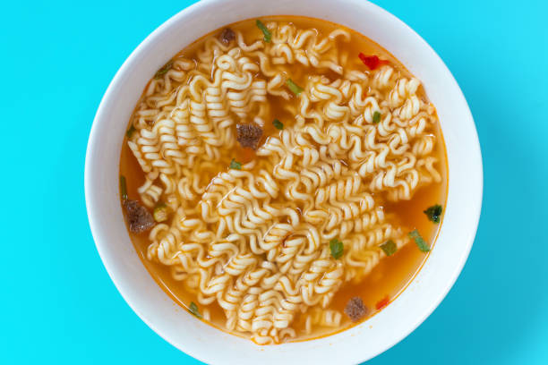

Top Ramen

Description
"The best noodles... on a budget."
Ingredients
- Top Ramen brand noodles
- Top Ramen brand seasoning
- Water
- Optional toppings and ingredients: Butter, Salt, Garlic, Hot sauce
Steps
- Boil 2-3 cups of water or stock.
- Once boiling, add the preferred seasoning packets, tsp of butter, and garlic or salt to taste.
- Add noodles and stir until you notice the noodles are soft (they will noticeably change color to a deeper yellow).
- Empty the pot of boiling ramen until the desired amount of broth is left.
- Put broth and noodles into bowl.
- Add topings of choice (ex: hot sauce, egg, etc...).
- Enjoy!
Home